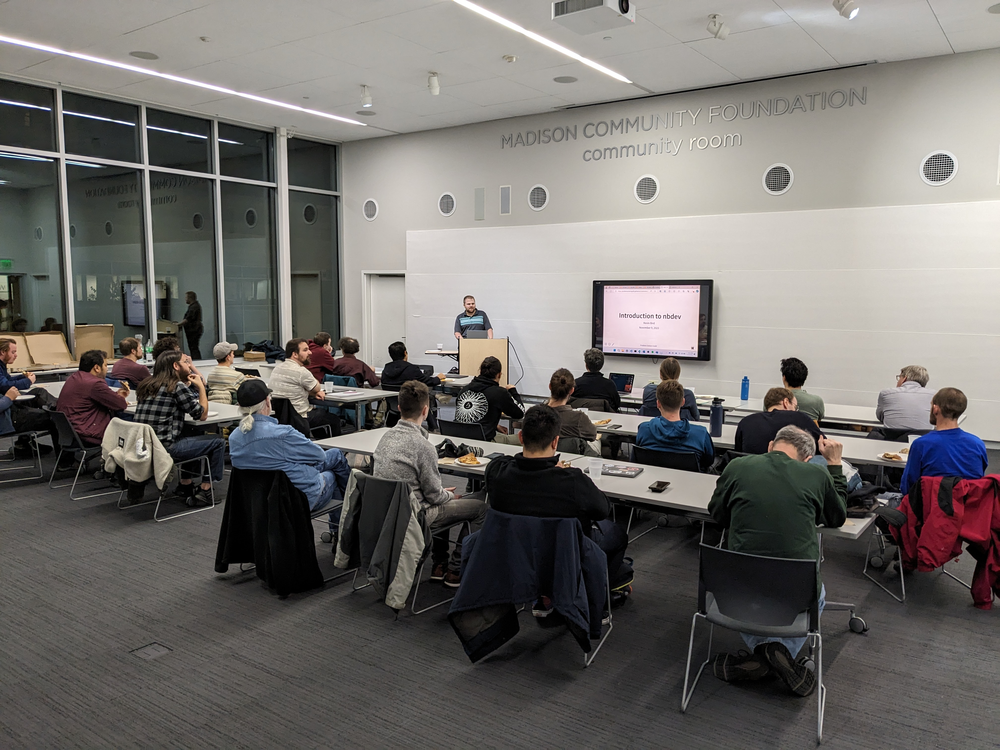

Join us in this informative session as we explore a fresh approach to Python development with nbdev in the Jupyter Notebook environment. Regardless of your Python experience level, this talk will introduce you to the potential benefits of using nbdev, a powerful Python library. We'll showcase how this combination can streamline your development process, including library creation and documentation generation, making coding more efficient and interactive. Whether you're just starting or a seasoned developer, you'll find practical insights for improving your Python projects. Join us in November and be part of the Python development transformation.
Kevin Bird, a Data Scientist at Vitro Glass and Co-Founder of The Problem Solvers Guild, is an accomplished machine learning practitioner deeply rooted in the fast.ai community. With a dedication to solving complex business challenges, Kevin collaborates closely with subject matter experts, employing a versatile toolkit to deliver effective solutions. He excels not only in the development of cutting-edge models but also in the crucial step of productionalizing these solutions, ensuring their seamless integration into real-world applications. His journey in data science exemplifies his commitment to driving innovation and sharing knowledge within the fast.ai community, reflecting his passion for making a meaningful impact in the field.
We'll be meeting at the downtown Madison library, 201 W Mifflin St, room 302, on 2023-11-09 at 6:30pm. As always, this event is free and open to the public. Attendees agree to adhere to the MadPy Code of Conduct.